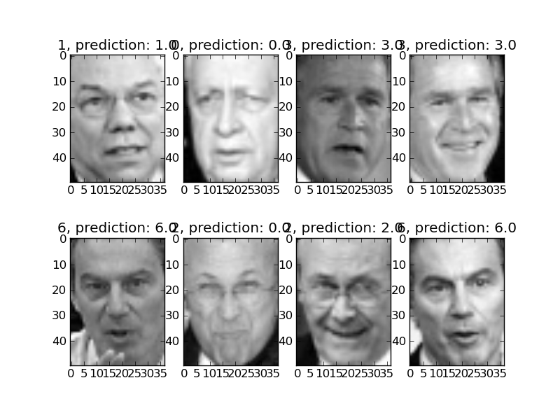

Script output:
[Parallel(n_jobs=1)]: Done job 1 | elapsed: 1.1s
[Parallel(n_jobs=1)]: Done job 2 | elapsed: 2.2s
[Parallel(n_jobs=1)]: Done job 3 | elapsed: 3.3s
[Parallel(n_jobs=1)]: Done job 4 | elapsed: 4.4s
[Parallel(n_jobs=1)]: Done job 5 | elapsed: 5.6s
[Parallel(n_jobs=1)]: Done job 6 | elapsed: 6.7s
[Parallel(n_jobs=1)]: Done job 7 | elapsed: 7.8s
[Parallel(n_jobs=1)]: Done job 8 | elapsed: 8.9s
[Parallel(n_jobs=1)]: Done job 9 | elapsed: 10.0s
[Parallel(n_jobs=1)]: Done job 10 | elapsed: 11.1s
[Parallel(n_jobs=1)]: Done job 11 | elapsed: 12.1s
[Parallel(n_jobs=1)]: Done job 12 | elapsed: 13.2s
[Parallel(n_jobs=1)]: Done job 13 | elapsed: 14.3s
[Parallel(n_jobs=1)]: Done job 14 | elapsed: 15.4s
[Parallel(n_jobs=1)]: Done job 15 | elapsed: 16.5s
[Parallel(n_jobs=1)]: Done job 16 | elapsed: 17.6s
[Parallel(n_jobs=1)]: Done job 17 | elapsed: 18.7s
[Parallel(n_jobs=1)]: Done job 18 | elapsed: 19.8s
[Parallel(n_jobs=1)]: Done job 19 | elapsed: 20.9s
[Parallel(n_jobs=1)]: Done job 20 | elapsed: 22.0s
[Parallel(n_jobs=1)]: Done job 21 | elapsed: 23.1s
[Parallel(n_jobs=1)]: Done job 22 | elapsed: 24.1s
[Parallel(n_jobs=1)]: Done job 23 | elapsed: 25.1s
[Parallel(n_jobs=1)]: Done job 24 | elapsed: 26.1s
[Parallel(n_jobs=1)]: Done job 25 | elapsed: 27.1s
[Parallel(n_jobs=1)]: Done job 26 | elapsed: 28.0s
[Parallel(n_jobs=1)]: Done job 27 | elapsed: 28.9s
[Parallel(n_jobs=1)]: Done job 28 | elapsed: 30.0s
[Parallel(n_jobs=1)]: Done job 29 | elapsed: 31.1s
[Parallel(n_jobs=1)]: Done job 30 | elapsed: 32.2s
[Parallel(n_jobs=1)]: Done job 31 | elapsed: 33.4s
[Parallel(n_jobs=1)]: Done job 32 | elapsed: 34.5s
[Parallel(n_jobs=1)]: Done job 33 | elapsed: 35.6s
[Parallel(n_jobs=1)]: Done job 34 | elapsed: 36.9s
[Parallel(n_jobs=1)]: Done job 35 | elapsed: 38.1s
[Parallel(n_jobs=1)]: Done job 36 | elapsed: 39.3s
[Parallel(n_jobs=1)]: Done job 37 | elapsed: 40.4s
[Parallel(n_jobs=1)]: Done job 38 | elapsed: 41.5s
[Parallel(n_jobs=1)]: Done job 39 | elapsed: 42.6s
[Parallel(n_jobs=1)]: Done job 40 | elapsed: 43.5s
[Parallel(n_jobs=1)]: Done job 41 | elapsed: 44.4s
[Parallel(n_jobs=1)]: Done job 42 | elapsed: 45.3s
[Parallel(n_jobs=1)]: Done job 43 | elapsed: 46.1s
[Parallel(n_jobs=1)]: Done job 44 | elapsed: 47.0s
[Parallel(n_jobs=1)]: Done job 45 | elapsed: 47.9s
[Parallel(n_jobs=1)]: Done job 46 | elapsed: 49.0s
[Parallel(n_jobs=1)]: Done job 47 | elapsed: 50.1s
[Parallel(n_jobs=1)]: Done job 48 | elapsed: 51.1s
[Parallel(n_jobs=1)]: Done job 49 | elapsed: 52.3s
[Parallel(n_jobs=1)]: Done job 50 | elapsed: 53.4s
[Parallel(n_jobs=1)]: Done job 51 | elapsed: 54.6s
[Parallel(n_jobs=1)]: Done job 52 | elapsed: 55.8s
[Parallel(n_jobs=1)]: Done job 53 | elapsed: 57.0s
[Parallel(n_jobs=1)]: Done job 54 | elapsed: 58.2s
[Parallel(n_jobs=1)]: Done job 55 | elapsed: 59.1s
[Parallel(n_jobs=1)]: Done job 56 | elapsed: 60.0s
[Parallel(n_jobs=1)]: Done job 57 | elapsed: 1.0min
[Parallel(n_jobs=1)]: Done job 58 | elapsed: 1.0min
[Parallel(n_jobs=1)]: Done job 59 | elapsed: 1.0min
[Parallel(n_jobs=1)]: Done job 60 | elapsed: 1.1min
[Parallel(n_jobs=1)]: Done job 61 | elapsed: 1.1min
[Parallel(n_jobs=1)]: Done job 62 | elapsed: 1.1min
[Parallel(n_jobs=1)]: Done job 63 | elapsed: 1.1min
[Parallel(n_jobs=1)]: Done job 64 | elapsed: 1.1min
[Parallel(n_jobs=1)]: Done job 65 | elapsed: 1.1min
[Parallel(n_jobs=1)]: Done job 66 | elapsed: 1.1min
[Parallel(n_jobs=1)]: Done job 67 | elapsed: 1.2min
[Parallel(n_jobs=1)]: Done job 68 | elapsed: 1.2min
[Parallel(n_jobs=1)]: Done job 69 | elapsed: 1.2min
[Parallel(n_jobs=1)]: Done job 70 | elapsed: 1.2min
[Parallel(n_jobs=1)]: Done job 71 | elapsed: 1.2min
[Parallel(n_jobs=1)]: Done job 72 | elapsed: 1.3min
[Parallel(n_jobs=1)]: Done job 73 | elapsed: 1.3min
[Parallel(n_jobs=1)]: Done job 74 | elapsed: 1.3min
[Parallel(n_jobs=1)]: Done job 75 | elapsed: 1.3min
[Parallel(n_jobs=1)]: Done job 76 | elapsed: 1.3min
[Parallel(n_jobs=1)]: Done job 77 | elapsed: 1.3min
[Parallel(n_jobs=1)]: Done job 78 | elapsed: 1.3min
[Parallel(n_jobs=1)]: Done job 79 | elapsed: 1.4min
[Parallel(n_jobs=1)]: Done job 80 | elapsed: 1.4min
[Parallel(n_jobs=1)]: Done job 81 | elapsed: 1.4min
[Parallel(n_jobs=1)]: Done job 82 | elapsed: 1.4min
[Parallel(n_jobs=1)]: Done job 83 | elapsed: 1.4min
[Parallel(n_jobs=1)]: Done job 84 | elapsed: 1.4min
[Parallel(n_jobs=1)]: Done job 85 | elapsed: 1.5min
[Parallel(n_jobs=1)]: Done job 86 | elapsed: 1.5min
[Parallel(n_jobs=1)]: Done job 87 | elapsed: 1.5min
[Parallel(n_jobs=1)]: Done job 88 | elapsed: 1.5min
[Parallel(n_jobs=1)]: Done job 89 | elapsed: 1.5min
[Parallel(n_jobs=1)]: Done job 90 | elapsed: 1.6min
SVC(C=5, cache_size=200, coef0=0.0, degree=3, gamma=0.001, kernel=rbf,
probability=False, shrinking=True, tol=0.001)
precision recall f1-score support
Ariel Sharon 0.70 0.80 0.74 20
Colin Powell 0.83 0.88 0.85 59
Donald Rumsfeld 0.67 0.80 0.73 30
George W Bush 0.96 0.86 0.90 132
Gerhard Schroeder 0.84 0.75 0.79 28
Hugo Chavez 0.82 0.82 0.82 17
Tony Blair 0.72 0.81 0.76 36
avg / total 0.85 0.84 0.84 322
[[ 16 3 1 0 0 0 0]
[ 3 52 1 1 0 0 2]
[ 3 1 24 0 0 0 2]
[ 1 7 4 113 2 3 2]
[ 0 0 3 0 21 0 4]
[ 0 0 0 0 2 14 1]
[ 0 0 3 4 0 0 29]]
Python source code: plot_face_recognition.py
from scikits.learn.datasets import fetch_lfw_people
from scikits.learn.grid_search import GridSearchCV
from scikits.learn.decomposition import RandomizedPCA
from scikits.learn.svm import SVC
# Download the data, if not already on disk and load it as numpy arrays
lfw_people = fetch_lfw_people(min_faces_per_person=70, resize=0.4)
# reshape the data using the traditional (n_samples, n_features) shape
faces = lfw_people.data
n_samples, h, w = faces.shape
X = faces.reshape((n_samples, h * w))
n_features = X.shape[1]
# the label to predict is the id of the person
y = lfw_people.target
target_names = lfw_people.target_names
# split into a training and testing set
train, test = iter(StratifiedKFold(y, k=4)).next()
X_train, X_test = X[train], X[test]
y_train, y_test = y[train], y[test]
# Compute a PCA (eigenfaces) on the face dataset (treated as unlabeled
# dataset): unsupervised feature extraction / dimensionality reduction
n_components = 150
pca = RandomizedPCA(n_components=n_components, whiten=True).fit(X_train)
eigenfaces = pca.components_.reshape((n_components, h, w))
X_train_pca = pca.transform(X_train)
X_test_pca = pca.transform(X_test)
# Train a SVM classification model
param_grid = dict(C=[1, 5, 10, 50, 100],
gamma=[0.0001, 0.0005, 0.001, 0.005, 0.01, 0.1])
clf = GridSearchCV(SVC(kernel='rbf'), param_grid,
fit_params={'class_weight': 'auto'},
verbose=1)
clf = clf.fit(X_train_pca, y_train)
print clf.best_estimator
# Quantitative evaluation of the model quality on the test set
from scikits.learn import metrics
y_pred = clf.predict(X_test_pca)
print metrics.classification_report(y_test, y_pred, target_names=target_names)
print metrics.confusion_matrix(y_test, y_pred,
labels=range(len(target_names)))
# Plot the results
import pylab as pl
for index, (img, label_true, label_pred) in enumerate(
zip(X_test[:8], y_test[:8], y_pred[:8])):
pl.subplot(2, 4, index+1).imshow(img.reshape(h, w), cmap=pl.cm.gray)
pl.title('%s, prediction: %s' % (label_true, label_pred))